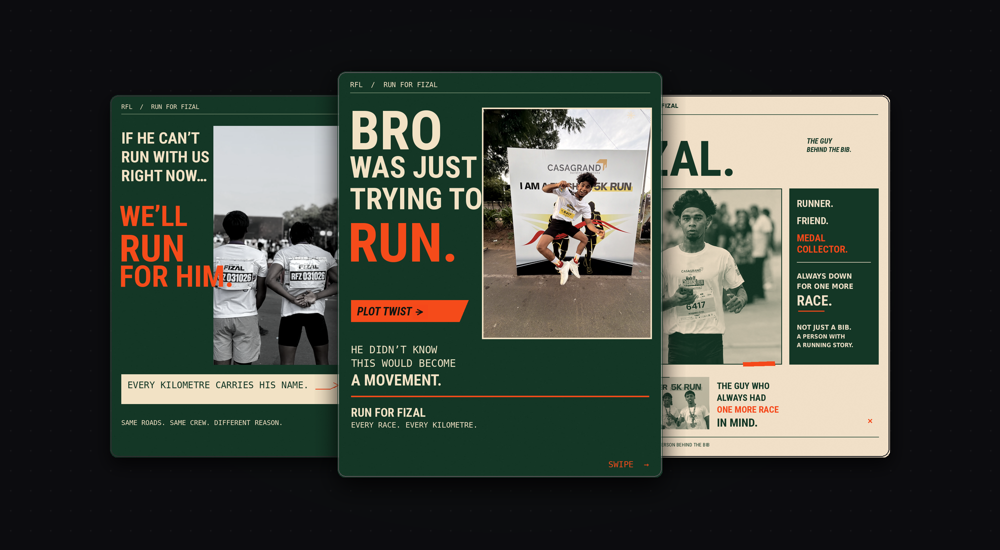
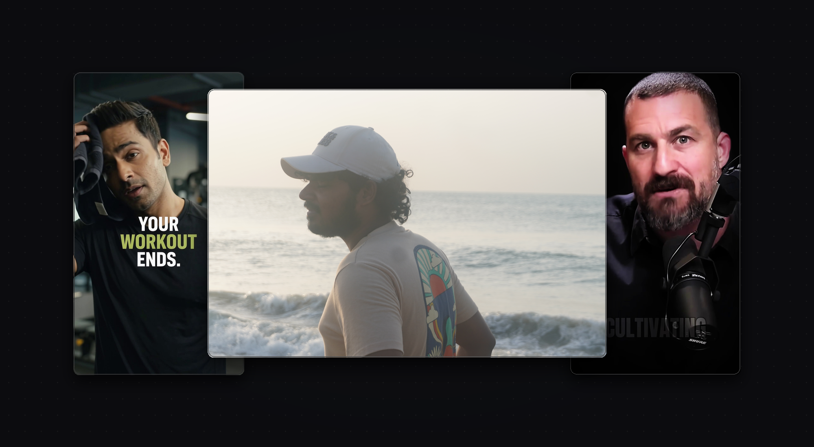

I graduated in 2024 with a Bachelor of Commerce (B.Com General) from Dr. Ambedkar Government Arts College, affiliated with the University of Madras in Chennai. My education gave me a solid understanding of business economics, commercial accounting, customer acquisition economics, and cost-benefit analysis.
During my studies, curiosity led me to explore backend development and software systems. Building applications gave me deep appreciation for how data flows, how databases store information, and how software logic executes. Rather than staying in pure software engineering, I realized my true passion was applying that technical mindset to performance marketing, analytics, and growth.
Content systems,
visual craft & production.
End-to-end creative capabilities spanning social media strategy, content calendars, real-world community storytelling, and high-retention video production. Organised into three core hubs without duplicate filler cards.
Social Media Marketing & Content
Social media strategy, content calendars, carousel post storyboarding, Instagram grid mockups, and festival poster campaigns for Bethel Express & Impex.

Social Media Management
Social media execution, campaign storytelling, on-track race photography, and athlete profile carousels for the Run for Fizal community movement.

Creative & Content Production
UGC advertising, Sony mirrorless camera photography (beach and studio portraits), and kinetic video editing with motion graphics.